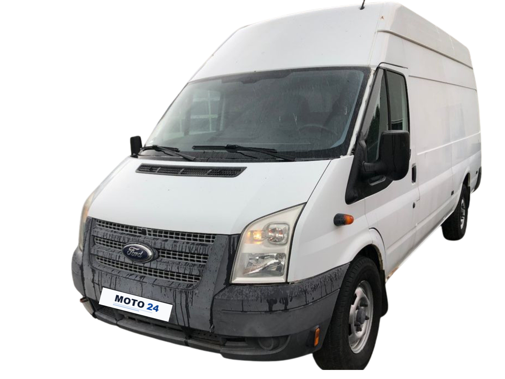
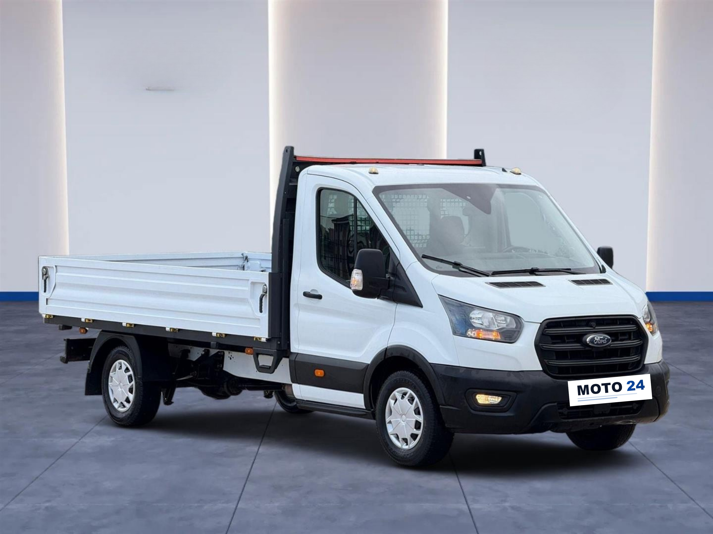
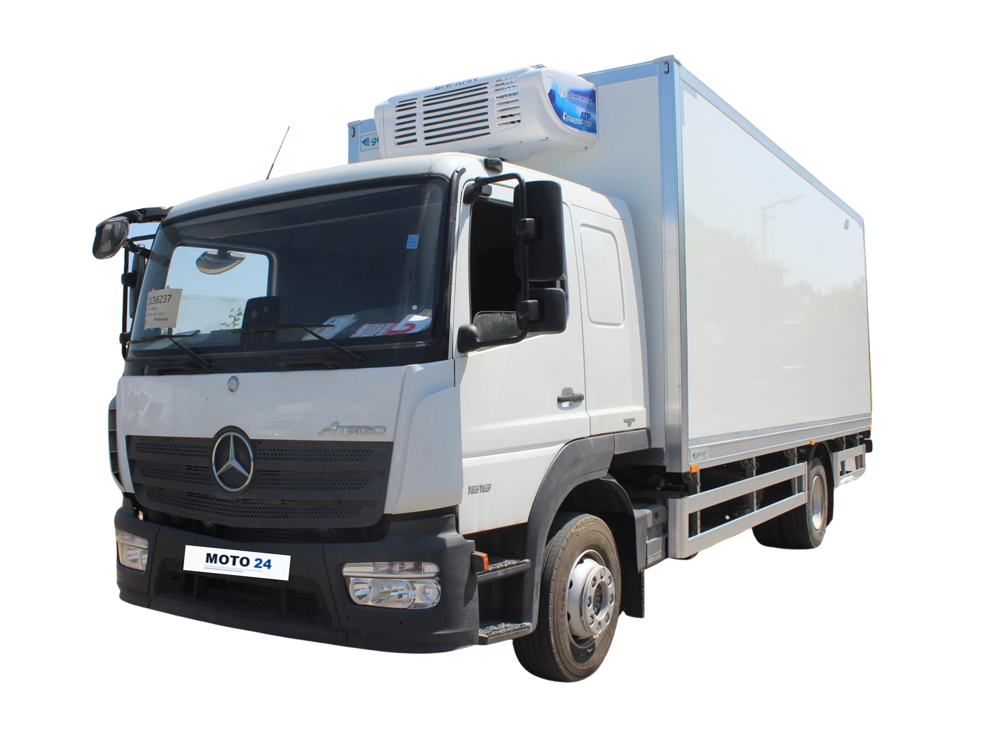

Araç Filomuz




Şehrin markası, yükün ustası.
Erzincan'ın tüm ilçe ve köylerine, Erzincan çıkışlı veya Erzincan varışlı
taşıma hizmetimiz bulunmaktadır.
Kapalı panelvanlarımızla motorsiklet, ATV, UTV ve kar motorsikletlerinizi çizilmeden, güvenle taşıyoruz.
Hava şartlarından etkilenmemesi gereken kuru gıda ve hassas eşyalarınız için ideal çözüm.
Erzincan içi ve şehirler arası parça eşya veya tam ev taşıma hizmeti.
Ergan Dağı ve çevresi için kayak takımı ve spor ekipmanlarınız özenle transfer edilir.
Erzincan MOTO24 Nakliye olarak, bölgenin zorlu iklim koşullarına hakimiz. Müşterilerimizin her türlü ihtiyacını karşılamak adına filomuzu geniş tuttuk; kapalı panelvan, kamyon, kamyonet ve tır seçeneklerimizle hizmetinizdeyiz. İster küçük bir koli, ister komple ev eşyası olsun; yükünüzü yağmur, kar ve rüzgardan koruyarak güvenle taşıyoruz. Erzincan, Sivas, Tunceli, Gümüşhane, Bayburt ve Erzurum hattında her gün yollardayız.
Kesinlikle hayır. Araçlarımızda özel motorsiklet sabitleme aparatları (spanset) ve ön teker dayama takozları bulunur. Kapalı kasada, rüzgar ve toz görmeden, sigortalı olarak taşınır.
Erzincan'ın tüm ilçe (Refahiye, Kemah, İliç, Tercan vb.) ve köylerine hizmetimiz vardır. Ayrıca Erzincan ÇIKIŞLI veya Erzincan VARIŞLI olmak kaydıyla tüm şehirlere (İstanbul, Ankara, Sivas, Erzurum vb.) yük taşıyoruz.
Fiyatlarımız; gidecek mesafeye (km), yükün büyüklüğüne ve tek yön/gidiş-dönüş durumuna göre belirlenir. WhatsApp üzerinden yükün fotoğrafını atarak anında net fiyat alabilirsiniz.
Acil durumlar (yolda kalma vb.) için 7/24 aracımız hazırdır. Ancak şehirler arası planlı ev veya yük taşımaları için 1-2 gün önceden haber vermeniz, size daha uygun fiyat sunmamızı sağlar.
Evet, "Parça Eşya" taşıma hizmetimiz mevcuttur. Komple kamyon tutmanıza gerek kalmadan, sadece yükünüzün kapladığı yer kadar ücret ödersiniz. Ekonomik ve hızlıdır.
MOTO24 Nakliye olarak geniş bir hizmet ağına sahibiz.
Erzincan Merkez başta olmak üzere;
Refahiye, Kemah, Kemaliye (Eğin), İliç, Çayırlı, Otlukbeli, Tercan, Üzümlü ilçelerine günlük ve haftalık seferlerimiz vardır.
Şehirler arası taşımacılıkta ise komşu illerimiz;
Erzurum (Aziziye, Yakutiye, Palandöken, Gezköy OSB, Ilıca, Çat, Pasinler),
Bayburt (Aydıntepe, Demirözü, Gökçedere),
Giresun (Çamoluk, Şebinkarahisar, Alucra),
Sivas (Suşehri, Akıncılar, Altköy, Zara, Kangal, Gölova),
Gümüşhane (Kelkit, Şiran, Köse, Kürtün, Torul) ve
Tunceli (Pülümür, Ovacık, Mazgirt, Pertek, Nazımiye)
güzergahlarında parsiyel ve tam yük taşımacılığı yapmaktayız.